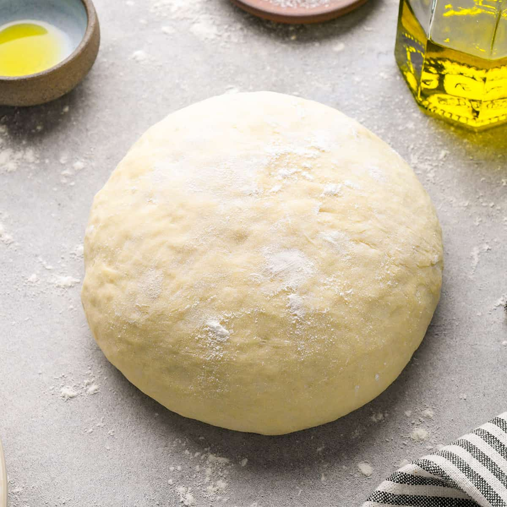

Vegan Pizza Dough
From Karissa's Vegan Kitchen

Here's an easy recipe to make some vegan pizza dough. No need to order in with this recipe. Easy to throw together and tastes delicious
Once the dough is made the world is your oyster and you can make any of your pizza favourites
If you need a sauce, there's one right here.
Ingredients
- 3/4 cup warm water
- 2 1/4 tsp active dry yeast
- 1 tsp sugar
- 1 tsp salt
- 2 tbsp olive oil
- 2 cups all pupose flour
Method
- Stir together warm water, yeast, and sugar. Let activate for 10 minutes – it should become foamy. If it's not foamy, then the yeast is may be too old or your water was too hot.
- Stir in oil and salt.
- Mix in 1/2 cup flour at a time.
- Knead (using your hands or a dough hook in a stand mixer) until it forms a cohesive ball. It will still be a little sticky but you should be able to pick it up as one piece. If it's far too sticky, add 1-2 more tablespoons of flour at a time until it comes together.
- Place the ball of dough into a large greased bowl. Cover with a towel and let rise in a warm location for 1 hour or until doubled in size. I let my dough rise in the oven with JUST the oven light on.
- Pre-heat oven to 450 degrees Fahrenheit (make sure to remove the dough from the oven if you let it rise in there.)
- Punch the dough down and knead a couple of times until it becomes smooth and more firm. At this point, you can store the dough in the freezer or fridge until later…or make a pizza!
- To cook roll out the dough on a floured surface and poke the dough with a fork. Then pre-bake in an oven at 245 degrees(celsius) for 5-7 minutes before pulling it out and adding your sauce and toppings. Then bake for another 10-15 minutes
return to the recipe list here